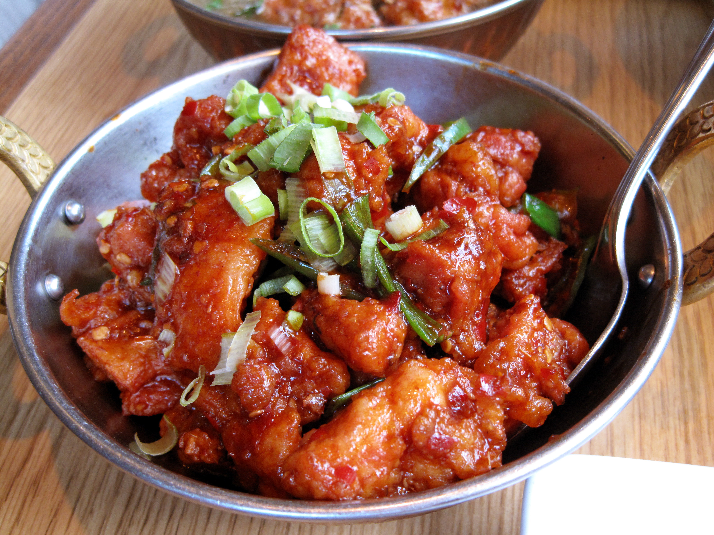

Szechuan Chicken

Spicy, Garlic Chicken
Country of Origin : China
Coming from the Szechuan province of China, this dish showcases the Szechuan 'flower pepper', which produces a mild numbingness when consumed.
Ingredients List
- 1 lb boneless chicken, cut into bite sized pieces
- 1 cup mixed vegetables (carrots, eggplants, or snowpeas all work great)
- 2 bunches scallions, sliced into 1 inch strips
- 1 ½ tbsp chili paste ( Sambal or chili garlic sauce)
- 2 cloves garlic
- 5 tbsp soy sauce
- 5 tbsp sherry cooking wine
- 5 tsp sugar
- 1 tbsp vinegar
- 1 tbsp sesame oil
- 4 tsp cornstarch
- dried red chilis
- 2 tbsp Szechuan peppercorns
- Grapeseed or other high temperature oil
Directions
- Whisk 3 tbsp soy, 3 tbsp sherry, 2 tsp sugar, and 2 tsp cornstarch. Marinate with chicken at least 30 minutes.
- Blend chili paste, garlic, and ginger (minced or grated).
- Whisk together remaining soy, sherry, sugar, sesame oil, and vinegar.
- Heat 2 tbsp oil in a hot wok on high.
- Add chicken (strained) to wok and cook until done, 5 minutes.
- Remove chicken, add peppercorns and a handful of red chilis.
- Add vegetables for 1 minute, then chicken.
- Add chili/garlic mixture, followed by remaining sauces.
- Add remaining cornstarch with 2 tbsp water to thicken the sauce as desired.
- Stir, remove from heat, and serve.
Notes
Those chilis and peppercorns sure are hot. No need to eat them all, feel free to remove them after cooking for a milder meal.